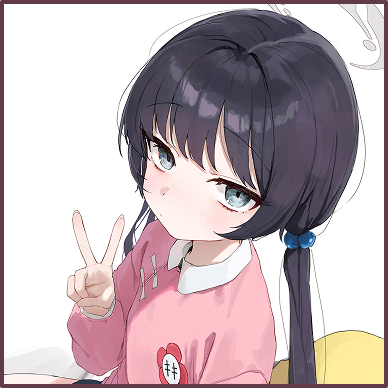

竜華キサキ
Introduction
Kisaki is the head of the Xuanlong Office and the student council president of Shanhaijing. She is called the Master (門主様) by the students of the school.
Personality
As the Master of Xuanlong, she is capable of planning far ahead with proper judgement. Despite the fanaticism present within Xuanlong, Kisaki herself is a calm and reasonable individual who highly values the truth, rather than conceptions made by others. That said, she also has a mildly playful side in her, though it rarely surfaces.
Appearance
Kisaki is a small girl with black hair tied into two hair buns with two twintails trailing out of them, and side-swept bangs with two longer strands framing her face. She has two butterfly hair pins near her right hair bun, and grey eyes. Her expression is very neutral, with only small, subtle changes when she smiles or shows anger.